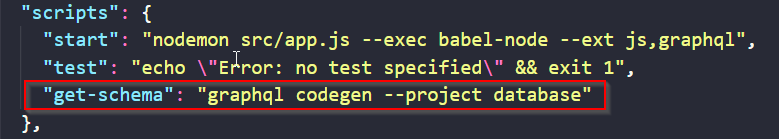

Follow this : https://github.com/Urigo/graphql-cli/blob/master/docs/MIGRATION.md
STEPS:
1. npm install graphql-cli --save
2. npm i @graphql-cli/codegen @graphql-codegen/schema-ast --save
3. Make a file named .graphqlrc.yml (in root)
4. Make a new folder in src name as generated
5. Paste the following inside the file .graphqlrc.yml
http://192.168.99.100:4466/-
- database:
- schema: prisma/prisma.yml
- extensions:
- codegen:
- generates: ./src/generated/prisma.graphql:
-
5. Under script in package.json paste the following - "get-schema":"graphqlcodegen--projectdatabase"

6. Make a new file in src folder named as prisma.js and type the following iside it. notetypeDefs point to setp 4 generated folder

7. Wirte any graphql queries here

8. Import the prisma.jsfile in app.js